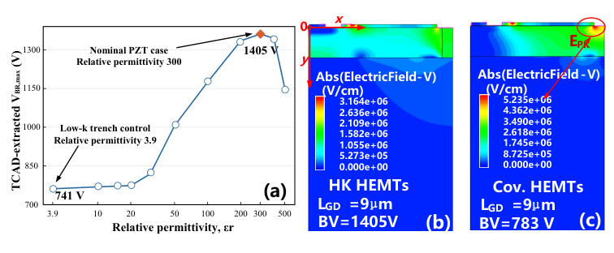

Paper brief
Electric-field redistribution via high-k dielectric trench in GaN-on-Si AlGaN/GaN HEMTs
Applied Physics Letters, 129(17) · 173502
A drain-side PZT high-k trench redistributes electric fields in GaN-on-Si HEMTs, improving voltage handling and dynamic ON-resistance in representative devices.
Research question
Drain-side field crowding limits breakdown in GaN-on-Si HEMTs and can aggravate field-assisted trapping and dynamic ON-resistance degradation.
Method
A PZT-filled trench is fabricated near the drain. Displacement-field boundary conditions guide the interpretation, while 2D TCAD sweeps relative permittivity from 3.9 to 500. Static and dynamic measurements compare co-fabricated conventional and trench devices.
Technical route
- Drain-side trench
Fabricate a PZT-filled trench in a GaN-on-Si AlGaN/GaN HEMT.
- Boundary analysis
Analyze normal and tangential fields through displacement-field boundary conditions.
- TCAD sweep
Sweep permittivity and inspect 2D electric-field and potential distributions.
- Device measurements
Compare breakdown, static conduction, and dynamic resistance after high-voltage stress.
Evidence
- Representative breakdown
- 1405 V
LGD=9 μm; the co-fabricated conventional device reaches 783 V, corresponding to a 79% breakdown increase.
- Specific ON-resistance
- 1.47 mΩ·cm²
Figure 5(a), close to the conventional device at 1.43 mΩ·cm².
- Dynamic / static resistance
- 1.6× / 2.5×
After 900 / 1200 V off-state stress, respectively; extracted 3 μs after the gate transition.

Device Structure and Microscopy
Original Figure 1: conventional and PZT-trench cross sections with microscopy of the fabricated structure.
The drain-side dielectric structure changes the local high-field boundary.
Source: Applied Physics Letters, 129(17), 173502 (2026). Figures from the author-supplied accepted manuscript.
View full-size figure

Permittivity Sweep and Electric Fields
Original Figure 2: terminal-voltage metric versus permittivity and fields near each device’s terminal voltage.
The response is nonmonotonic; different terminal biases do not constitute a same-bias field comparison.
Source: Applied Physics Letters, 129(17), 173502 (2026). Figures from the author-supplied accepted manuscript.
View full-size figure
Static and Dynamic Conduction
Original Figure 5: output characteristics, specific ON-resistance, and dynamic-to-static resistance ratios.
Assess high-voltage stress degradation alongside comparable static conduction.
Source: Applied Physics Letters, 129(17), 173502 (2026). Figures from the author-supplied accepted manuscript.
View full-size figureTakeaway & limitations
Drain-side dielectric-boundary engineering reshapes the high-field region; TCAD and co-fabricated device measurements support enhanced breakdown and reduced dynamic resistance degradation.
The study relates dielectric-boundary design to static and dynamic high-voltage behavior through device structures, field analysis, and electrical measurements on co-processed devices.
- Integrates a drain-side PZT trench and characterizes fabricated lateral GaN-on-Si HEMTs.
- Analyzes dielectric-boundary field management with a permittivity sweep and 2D TCAD.
- Reports breakdown, specific ON-resistance, and dynamic resistance under high-voltage stress.
Locate the trench in Figure 1, then read the permittivity sweep in Figure 2 and dynamic measurements in Figure 5. The 1405 V result is from representative co-fabricated devices without device-to-device statistics. TCAD uses an effective static permittivity; a separate ferroelectric contribution was not independently established.
Citation
Zhen Cao, Zhiwei Hou, Qi Sun, Guohao Yu, Bingliang Zhang, Biao Hou, Licheng Jiao, and Yintang Yang. Electric-field redistribution via high-k dielectric trench in GaN-on-Si AlGaN/GaN HEMTs. Applied Physics Letters, 2026, 173502.
Download BibTeX